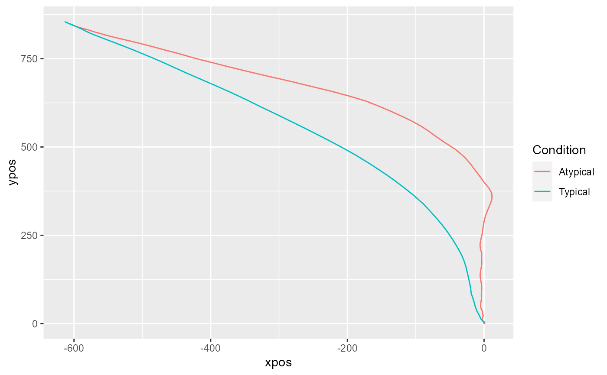

The mousetrap package provides functions for importing, preprocessing, analyzing, aggregating, and visualizing mouse-tracking data. In the following, a brief overview of the functions in this package is given.
Depending on the file format, one of the standard R functions for reading files into R can be used (e.g., read.table or read.csv).
If raw data were collected using MouseTracker, the mousetrap package provides the read_mt function to read files in the ".mt" format.
If several raw data files should be read and merged, the read_bulk function from the readbulk package can be used (or the read_opensesame function, if data were collected using OpenSesame).
The initial step to prepare data for analysis in the mousetrap package is to create a mousetrap data object. Depending on the input format, one of the following functions can be used. A detailed description (and example) of the resulting mousetrap data object can be found in mt_example.
mt_import_mousetrap imports mouse-tracking data that were recorded using the mousetrap plugin for OpenSesame.
mt_import_wide imports mouse-tracking data saved in a wide format (e.g., data collected using MouseTracker).
mt_import_long imports mouse-tracking data saved in a long format. (e.g., trajectories exported using mt_export_long).
A number of functions are available that perform geometric preprocessing operations.
mt_remap_symmetric remaps mouse trajectories to one side (or one quadrant) of the coordinate system.
mt_align is a general purpose function for aligning and rescaling trajectories. For specific operations, you can rely on one of the following functions.
mt_align_start aligns the start position of trajectories.
mt_align_start_end aligns all trajectories so that they share a common initial and final coordinate (this is also sometimes referred to as "space-normalization").
A number of functions are available that perform resampling and interpolation operations.
mt_exclude_initiation excludes the initial phase of a trial without mouse movement.
mt_exclude_finish excludes a potential phase without mouse movement at the end of a trial.
mt_time_normalize performs time-normalization using equidistant time intervals, resulting in an identical number of samples for all trajectories.
mt_resample resamples trajectories so that samples occur at constant intervals of a specified length.
mt_average averages trajectory coordinates (and related variables) for time bins of constant duration.
mt_length_normalize re-represents each trajectory spatially so that adjacent points on the trajectory become equidistant to each other.
A number of functions are available for data handling operations, such as filtering or adding of new variables or trajectories.
mt_subset filters mouse-tracking data by trials, so that only those meeting the defined criteria are included.
mt_add_variables adds new, self created variables to a trajectory array.
mt_add_trajectory adds a new trajectory to a trajectory array.
mt_bind joins two trajectory arrays.
A number of different analysis procedures and summary statistics for mouse trajectories have been established in the existing literature. The following functions implement many of these approaches.
mt_derivatives calculates distance, velocity, and acceleration for trajectories.
mt_angles calculates movement angles for trajectories.
mt_deviations calculates the deviations from an idealized trajectory (straight line).
mt_measures calculates a set of mouse-tracking measures.
mt_sample_entropy calculates sample entropy.
mt_standardize standardizes mouse-tracking measures onto a common scale (separately for subsets of the data, e.g., per participant).
mt_scale_trajectories provides different options for standardizing variables in a mouse trajectory array.
mt_check_bimodality assesses the bimodality of mouse-tracking measure distributions.
mt_check_resolution checks the (temporal) logging resolution of raw trajectories.
mt_count counts the number of observations for each trajectory.
A number of different functions for clustering trajectories is provided.
mt_distmat computes the dissimilarity/distance between each pair of trajectories.
mt_cluster performs trajectory clustering with a specified number of clusters.
mt_cluster_k estimates the optimal number of clusters using various methods.
mt_map maps trajectories onto a predefined set of prototype trajectories (a core set is provided in mt_prototypes).
A number of helper functions are provided for aggregating, plotting, and exporting the multi-dimensional mouse trajectory arrays.
mt_reshape is a general purpose reshaping and aggregation function for mousetrap data.
mt_aggregate aggregates mouse-tracking data per condition.
mt_aggregate_per_subject aggregates mouse-tracking data per (within subjects-) condition separately for each subject.
mt_export_long exports mouse-tracking data in long format.
mt_export_wide exports mouse-tracking data in wide format.
The following functions can be used for plotting trajectory data, e.g., individual and aggregated trajectories or velocity profiles.
mt_plot plots individual trajectory data.
mt_plot_aggregate plots aggregated trajectory data.
mt_plot_add_rect adds rectangles to a trajectory plot.
mt_plot_riverbed plots the relative frequency of a selected variable across time.
mt_plot_per_trajectory creates a pdf with separate plots per trajectory.
mt_heatmap and mt_heatmap_ggplot plot trajectory heatmaps.
mt_diffmap for creating a difference-heatmap of two trajectory heatmap images.
mt_animate creates a gif trajectory animation.
bimodality_coefficient calculates the bimodality coefficient.
scale_within scales and centers variables within the levels of another variable.
bezier creates Bezier-curves using the Bernstein approximation.
mt_example and mt_example_raw contain a mouse-tracking
example dataset for demonstrations using the mousetrap package.
KH2017 and KH2017_raw contain a mouse-tracking dataset from Kieslich & Henninger (2017).
if (FALSE) {
KH2017 <- mt_import_mousetrap(subset(KH2017_raw,correct==1))
KH2017 <- mt_remap_symmetric(KH2017)
KH2017 <- mt_align_start(KH2017)
}
KH2017 <- mt_time_normalize(KH2017)
KH2017 <- mt_measures(KH2017)
mt_aggregate(
KH2017, use="measures",
use_variables=c("MAD", "AD"),
use2_variables="Condition",
subject_id="subject_nr"
)
#> Condition MAD AD
#> 1 Atypical 343.7954 100.36799
#> 2 Typical 172.2093 39.72137
mt_plot_aggregate(KH2017,
use="tn_trajectories",
x="xpos", y="ypos", color="Condition",
subject_id="subject_nr"
)

if (FALSE) {
mt_plot(KH2017,
use="tn_trajectories",
x="xpos", y="ypos", color="Condition"
)
}